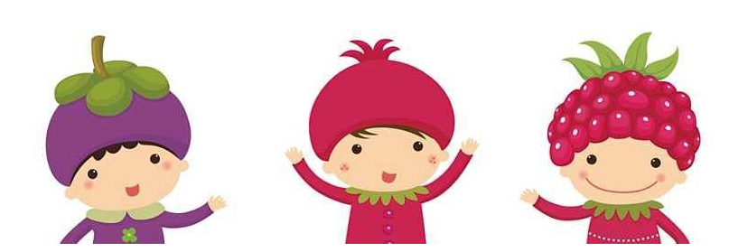

从盼望长大，到恐惧长大，意味着你真的长大了，而且童年已经离你很远很远。曾几何时，追逐蓝天白云，捉蝴蝶小虫，那是我们的快乐。如今的你多久没有放肆的真心大笑？多久没有看着那蓝天白云？是的，童年已经走了。可是内心的童心，如果你搭建，就会有装满童心的城堡。我们来测测你到底还剩下多少童心可以搭建内心的城堡。
1、如果你在纸上随意画一个圈，这个圆圈就像—
空中挂着的圆月—2
随手从马路上拾起的硬币—3
2、在你信手调拨广播电台时，会发生以下哪种情况？
当听到一首喜爱的歌曲时，默默停下来—4
转来转去也没有想要听的节目—3
3、当你低头看手中的键盘和鼠标时，会联想到以下哪种情况？
它们就像路人，彼此间没有联系—4
它们是一对情侣，永远对彼此不离不弃—5
4、在春暖花开的季节里，你会联想到—
美好难忘的过去—6
不堪回首的回忆—5
5、你认为你的人生是在什么样的情形中度过？
怅然发呆间，木然地从人群中走过—6
在微笑和欢笑中绽放一个又一个生机—7
6、如果你心里想念一个人，你会怎么做？
盼望着风把自己的思念传达给他（她）—7
不顾一切地告诉他（她）—8
7、在你心目中，六一儿童节是—
自己的节日，不管我的年龄有多大—9
我以长大，这不是属于我的节日—8
8、在你看来，以下两人谁最需要你的爱护？
亲爱的妈妈，有的时候像个老小孩—10
最要好的朋友，他（她）很需要我—9
9、当你长大后，曾经在漫天繁星下许愿—
赤子的心永远不要改变—10
要记住我最初最真的爱恋—11
10、如果可以重返与好友决裂的那一天，你会怎么做？
重新认真地思考是否决裂—选项A
顺其自然，没有必要再留恋—11
11、你认为自己的眼泪是—
永不干涸，并常常泛滥—选项B
滴落心灵深处，不为人知—12
12、当你和其他人又不同意见时，你往往会怎么做？
换位思考，尝试理解他人的心理活动—选项D
时刻保持一颗谦虚的心—C
↓
↓
↓
↓
↓
↓
↓
↓
A选项：你是个小孩
你的童心宛若新生的嫩芽。你不善于接受人与人之间肆意的变化，对那些不美好，你往往无法奉陪。你并非不懂，是你不甘不愿。而与你相处的人，即便拥有恶魔般的灵魂也会被你净化。快乐而善良是一种治愈的力量，这样的力量弱不禁风，却是人类美好的存在。
B选项：你是个小大人
你的童心童真总在修复中。你看得比同龄人远，想法较成熟，很早就流露出一种少年老成的姿态。你对学业，未来都有自己的见解，并能清醒地意识到如何通过别人的错误为自己吸取经验教训。很早开始，你就能敏锐地洞悉这世俗的一切。
C选项：你是个成熟的人
你完全没有童心童真，这也意味着你拥有无坚不摧的意志。你是明白的，这个人类的世界，并不是适者生存，而是强者生存。你的温和不意味着说好话，看似亲切的笑容就像岩石一样坚硬。
D选项：你是大小孩
你的纯真犹如倒掉半杯的水，只有你乐意的时候，才肯拿出来。不认识你的人也许会觉得你显得成熟，有主见。其实，那些都是装的！别看你表面老到，其实你骨子里还是个小孩，你早就学会把童心童真偷偷藏起来，不轻易被人伤害。